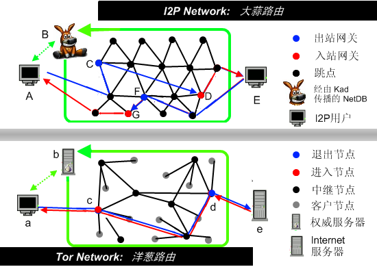
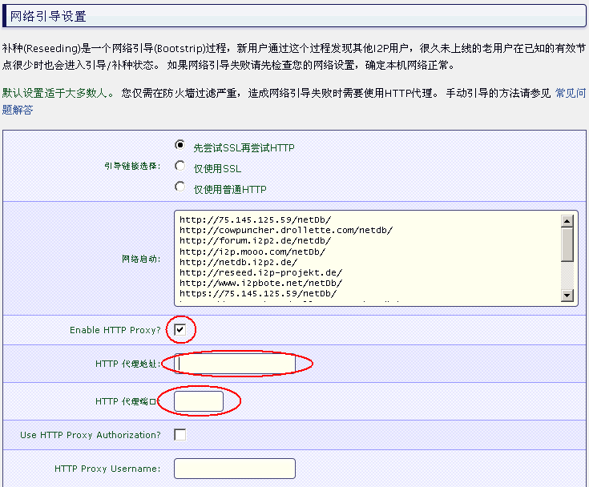
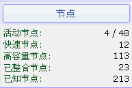
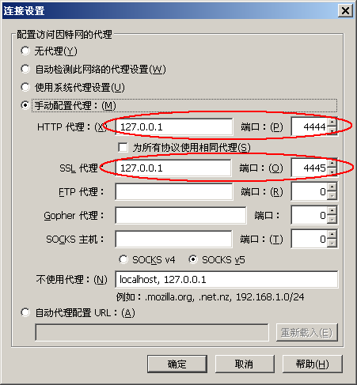

最近有网友在博客里留言，强烈希望俺扫盲 I2P 的使用。其实俺很早就尝试过 I2P，但因为速度太慢，所以一直没在博客上推荐。最近 I2P 刚发布了 0.9.0 版本，俺试了一下，速度有所改善。所以今天给大伙儿介绍一下。
I2P 是洋文“Invisible Internet Project”的缩写。官方网站是 https://geti2p.net/，维基百科的介绍在“这里”。
I2P 在很多方面跟 Tor 相似——也是开源软件、也采用分布式、也强调隐匿性。
为啥说 I2P 的安全性强捏？
在网络路由方式上，大名鼎鼎的 TOR 是“洋葱路由”，而 I2P 是“大蒜路由”。这个“大蒜路由”，据说是“洋葱路由”的增强改进版——安全性更好、隐匿性更强。
具体好在哪捏？简单说一下。
Tor 和 I2P 的相同点在于：
都是经过若干个网络节点来加密和中转数据，并防止你的真实 IP 暴露。
两者的差别在于：
TOR 使用【同一条网络链路】实现数据的发送和接收；
I2P 使用【多条网络链路】发送数据和接受数据——并且发送和接收数据的链路，数量可以是不同的。
两者在路由方式上的差异对比，请看如下示意图。更多的技术细节，俺就不展开了。大伙儿有兴趣的话，今后单独写篇博文。

在抗封杀方面，I2P 比 Tor 要坚挺。
先说说 Tor 为啥被天朝封杀：
Tor 每次启动时，需要先连接到某个 Tor 的【目录服务器】，获取网络上可用节点的信息。由于目录服务器数量【很少】，GFW 就把互联网上所有的 Tor 目录服务器的 IP 地址都列入黑名单。后来，Tor 官网提供网桥中继，帮助网友接入 Tor 网络。但是捏，Tor 的网桥中继，数量依然不太多。据说 GFW 专门有人在盯着 Tor 官网更新的网桥中继地址——每次有新的中继地址贴出来，就列入黑名单。经过 GFW 的不懈努力，大部分 Tor 的网桥都被封杀。大约从2010~2014年，Tor 在天朝内不太好使（直到 Tor 后来提供了 meek 插件，才重新突破 GFW 的封锁）
再看看 I2P 为啥封杀不了：
I2P 使用 Kad 算法（用过电驴或电骡的网友，应该听说过）来获取网络节点的信息。这么做有几个好处：
1. 不需要目录服务器
2. Kad 算法拿到的节点信息只是整个 I2P 网络的一小部分
3. 每一台运行 I2P 的主机都可以成为中继，帮别人转发数据（类似于 P2P 下载）
由于上述好处，GFW 很难把所有 I2P 节点都列入黑名单。
引申阅读：
《聊聊分布式散列表（DHT）的原理——以 Kademlia（Kad） 和Chord 为例》
前面说的这些优点，导致了一个明显的副作用，就是速度慢。
速度慢是 I2P 为了安全性而不得不付出的代价。据俺亲自测试，0.9版本下载速度最多只有十几 KB/s 而已。如果是以前的版本，似乎还要慢 :(
I2P 的官网老早以前就被 GFW 封了。所以你需要【翻墙】才能打开“这个下载页面”，下载 I2P 的最新版本（目前是 0.9.xx）。
由于 I2P 是用 Java 编写的，所以你本机需要安装 Java 的运行环境（JDK 或 JRE）。Java 的版本需要 1.5 或者更高（Java 官网的下载页面在“这里”）。
安装的第一步会让你选语言，不懂洋文的同学，当然要选中文啦。安装步骤很简单，俺就不浪费口水了。
安装完成后，会在开始菜单添加 I2P 的链接。点击相关菜单，就可以启动 I2P。
I2P 本身不提供 GUI 界面，但是提供 Web 界面。I2P 启动后，你只需在浏览器地址栏输入
注意！这步是关键，看仔细喽！
前面说了，I2P 是依靠 Kad 网络算法，通过不断扩散，来获取越来越多的节点信息。但是这个 Kad 网络算法不是万能的——它需要一些初始的种子，才能开始工作。在 I2P 的安装包中，已经内置了若干种子（节点信息）。但是天朝的 GFW 早就把这些内置的节点彻底封杀了。所以在天朝，第一次启动 I2P 会找不到网络。这时候就需要补种（补充种子），洋文叫”reseed“。
通常来说，补种只需要做一次，之后你的 I2P 就可以一直联网了。如果你的 I2P 停了很长时间（几个月）没有运行，那么下一次运行的时候，可能会无法联网，这时候就需要再补种。
I2P 的补种大致有三招，分别如下：
第1招：用其它翻墙工具给 I2P 补种
I2P 内置了一批“补种服务器”（洋文叫“reseed server”）。很显然，这些“补种服务器”早就被 GFW 封杀了。要想通过这些“种子服务器”进行补种，需要让 I2P 通过【其它翻墙工具】联网。
启动 I2P 之后，用浏览器中访问如下网址，就可以进入【I2P 的补种界面】。
在这个界面上添加代理，填好代理地址和端口之后，要记得点击 "保存修改+立刻开始网络引导" 按钮哦。然后 I2P 就可以通过其它翻墙工具联网并补种。界面截图如下（具体的代理地址和端口，取决于你用的翻墙软件）：

补种完成之后，当 I2P 已经找到其它节点（界面上的 Peers 大于零），你就可以把代理的选项【去掉】——让 I2P【独立联网】。
第2招：找其它人帮忙获取 I2P 的【种子文件】
假设你有一个朋友手头有【可用的】I2P，那么你让这个朋友生成 I2P 的种子文件，并把种子文件发给你；然后你在自己的 I2P 补种界面上，导入这个种子文件，就可以成功补种。
【生成种子文件】的方法如下：
进入“I2P 的补种界面”，界面上有一项是【Create reseed file】。如果 I2P 已经联网，就可以通过这个功能，创建一个种子文件（文件中会包含可用的 I2P 节点的信息）。这个种子文件可以分享给其他 I2P 的使用者。
【导入种子文件】的方法如下：
进入“I2P 的补种界面”，界面上有一项是【Reseed from file】，用来导入种子文件。只要导入的种子文件【足够新鲜】，就可以让无法联网的 I2P 重新联网。
补充说明：
种子文件是有【时效性】滴。越久以前创建的种子文件，时效性越差。因为 I2P 网络的节点是在不断变化的——很早以前创建的种子文件，其中包含的节点信息可能已经过时了。一般来说，一两天之内的种子文件，是“新鲜”的；而超过一周的种子文件，就“不新鲜”了。
第3招：通过 BT sync（Resilio Sync）获得 I2P 的【种子文件】
如果你既没有其它可用的翻墙工具，也没有其它朋友可以帮你生成种子文件，那么你还有第三个选择——利用俺提供的 BTsync（Resilio Sync）网盘获取种子文件。
熟悉俺博客的读者应该都知道：俺提供了一个 BTsync 网盘用来分享翻墙工具。该网盘的【同步密钥】如下：
在翻墙困难的时期，俺会尽量多更新网盘上的这批种子文件。
补充说明：
如果俺从自己的 I2P 界面上创建种子文件，这些种子文件可能会包含一些跟俺本人的网络环境相关的信息。
所以，【为了保护自己的隐匿性】，俺分享的“种子文件”是从一些【公开的】“补种服务器”下载的。为了确保种子文件的可靠性，俺使用了 I2P 界面【内置的】“补种服务器”（在“I2P 补种界面”上有这些 server 的列表）。
俺补种成功之后的效果图如下：
 （图中的
如果 I2P 找到的活动节点太少（小于20个），你就让它一直开着。开的时间越长，它能找到越多的节点。
一旦你的 I2P 接入网络，就可以利用 I2P 的代理来翻墙了。
I2P 默认提供 HTTP 代理（

为了测试 I2P 的翻墙效果，俺去下载了几个翻墙软件。测试下来，最大下载速度只有 10 KB/s 左右。连接不稳定，有时候下载到一半就断掉。
假如哪位同学也尝试了 I2P，欢迎到俺博客留言，反馈你的使用情况（尤其是网速的情况）。
在本文的末尾，俺稍微总结一下 I2P 的几种用途。
对于普通的网友，平时是不需要用 I2P 的（因为速度太慢）。但是你最好在手头留一个可用的 I2P 软件，以防万一。说不定哪天，朝廷加大网络封锁力度，导致你正在用的翻墙软件失效，这时候你就可以用 I2P 去下载其它翻墙软件的最新版本。
俺个人觉得，用 Tor 搞多重代理（以其它翻墙工具作为 Tor 的前置代理），已经足以在天朝匿名上网了。不过捏，少数比较挑剔的网友，会嫌 Tor 还不够安全。对这些网友来说，I2P 是 Tor 的【更安全】替代品。
其实拿 I2P 来做代理，是杀鸡用牛刀。 当初开发 I2P 的 主要目的，并【不是】为了提供翻墙代理，而是为了提供 “暗网”（洋文叫”darknet“）。所谓的“暗网”，就是一个完全隐匿的，不受政府监管的，也不会被政府破坏的地下互联网。既然是“地下互联网”，常见的互联网应用（比如：邮件、论坛、聊天、博客、文件共享），I2P 网络上都有。在 I2P 网络使用这些应用，你的真实 IP 地址【不会】暴露，减低了跨省追捕的风险。
举个例子：假如你想成立一个地下组织，密谋颠覆朝廷。那就可以考虑让组织内的成员都采用 I2P 的网络应用——对隐藏真实 IP 很有效。
至于如何在 I2P 上使用各种应用，不是本文的主题。有兴趣的同学，请看官网的“中文 FAQ”。
最后，祝愿更多的天朝网友掌握翻墙姿势，早日呼吸到互联网上自由的空气。
俺博客上，和本文相关的帖子（需翻墙）：
《如何翻墙》（传说中的扫盲教程，偶尔会更新）
《常见翻墙问题答疑》（传说中的 FAQ，偶尔会定期更新）
《获取翻墙软件方法大全》（教你在无法翻墙的情况下拿到翻墙软件）
《多台电脑如何【共享】翻墙通道——兼谈【端口转发】的几种方法》
《如何让【不支持】代理的网络软件，通过代理进行联网（不同平台的 N 种方法）》
《关于 TOR 的常见问题解答》
《戴“套”翻墻的方法》
《扫盲 VPN Gate——分布式的 VPN 服务器》
《新版本无界——赛风3失效后的另一个选择》
《双管齐下的赛风3》
《自由門——TOR 被封之后的另一个选择》
《扫盲 VPN 翻墙——以 Hotspot Shield 为例》
《如何隐藏你的踪迹，避免跨省追捕》（系列）
《聊聊分布式散列表（DHT）的原理——以 Kademlia（Kad） 和Chord 为例》
★I2P 是啥玩意儿？
I2P 是洋文“Invisible Internet Project”的缩写。官方网站是 https://geti2p.net/，维基百科的介绍在“这里”。
I2P 在很多方面跟 Tor 相似——也是开源软件、也采用分布式、也强调隐匿性。
★I2P 有啥特点？
◇安全性很强
为啥说 I2P 的安全性强捏？
在网络路由方式上，大名鼎鼎的 TOR 是“洋葱路由”，而 I2P 是“大蒜路由”。这个“大蒜路由”，据说是“洋葱路由”的增强改进版——安全性更好、隐匿性更强。
具体好在哪捏？简单说一下。
Tor 和 I2P 的相同点在于：
都是经过若干个网络节点来加密和中转数据，并防止你的真实 IP 暴露。
两者的差别在于：
TOR 使用【同一条网络链路】实现数据的发送和接收；
I2P 使用【多条网络链路】发送数据和接受数据——并且发送和接收数据的链路，数量可以是不同的。
两者在路由方式上的差异对比，请看如下示意图。更多的技术细节，俺就不展开了。大伙儿有兴趣的话，今后单独写篇博文。
◇很难被封杀
在抗封杀方面，I2P 比 Tor 要坚挺。
先说说 Tor 为啥被天朝封杀：
Tor 每次启动时，需要先连接到某个 Tor 的【目录服务器】，获取网络上可用节点的信息。由于目录服务器数量【很少】，GFW 就把互联网上所有的 Tor 目录服务器的 IP 地址都列入黑名单。后来，Tor 官网提供网桥中继，帮助网友接入 Tor 网络。但是捏，Tor 的网桥中继，数量依然不太多。据说 GFW 专门有人在盯着 Tor 官网更新的网桥中继地址——每次有新的中继地址贴出来，就列入黑名单。经过 GFW 的不懈努力，大部分 Tor 的网桥都被封杀。大约从2010~2014年，Tor 在天朝内不太好使（直到 Tor 后来提供了 meek 插件，才重新突破 GFW 的封锁）
再看看 I2P 为啥封杀不了：
I2P 使用 Kad 算法（用过电驴或电骡的网友，应该听说过）来获取网络节点的信息。这么做有几个好处：
1. 不需要目录服务器
2. Kad 算法拿到的节点信息只是整个 I2P 网络的一小部分
3. 每一台运行 I2P 的主机都可以成为中继，帮别人转发数据（类似于 P2P 下载）
由于上述好处，GFW 很难把所有 I2P 节点都列入黑名单。
引申阅读：
《聊聊分布式散列表（DHT）的原理——以 Kademlia（Kad） 和Chord 为例》
◇速度很慢
前面说的这些优点，导致了一个明显的副作用，就是速度慢。
速度慢是 I2P 为了安全性而不得不付出的代价。据俺亲自测试，0.9版本下载速度最多只有十几 KB/s 而已。如果是以前的版本，似乎还要慢 :(
★简明使用教程
◇准备工作
I2P 的官网老早以前就被 GFW 封了。所以你需要【翻墙】才能打开“这个下载页面”，下载 I2P 的最新版本（目前是 0.9.xx）。
由于 I2P 是用 Java 编写的，所以你本机需要安装 Java 的运行环境（JDK 或 JRE）。Java 的版本需要 1.5 或者更高（Java 官网的下载页面在“这里”）。
◇安装
安装的第一步会让你选语言，不懂洋文的同学，当然要选中文啦。安装步骤很简单，俺就不浪费口水了。
◇运行
安装完成后，会在开始菜单添加 I2P 的链接。点击相关菜单，就可以启动 I2P。
I2P 本身不提供 GUI 界面，但是提供 Web 界面。I2P 启动后，你只需在浏览器地址栏输入
http://127.0.0.1:7657/ 即可看到 I2P 的控制界面。◇补种
注意！这步是关键，看仔细喽！
前面说了，I2P 是依靠 Kad 网络算法，通过不断扩散，来获取越来越多的节点信息。但是这个 Kad 网络算法不是万能的——它需要一些初始的种子，才能开始工作。在 I2P 的安装包中，已经内置了若干种子（节点信息）。但是天朝的 GFW 早就把这些内置的节点彻底封杀了。所以在天朝，第一次启动 I2P 会找不到网络。这时候就需要补种（补充种子），洋文叫”reseed“。
通常来说，补种只需要做一次，之后你的 I2P 就可以一直联网了。如果你的 I2P 停了很长时间（几个月）没有运行，那么下一次运行的时候，可能会无法联网，这时候就需要再补种。
I2P 的补种大致有三招，分别如下：
第1招：用其它翻墙工具给 I2P 补种
I2P 内置了一批“补种服务器”（洋文叫“reseed server”）。很显然，这些“补种服务器”早就被 GFW 封杀了。要想通过这些“种子服务器”进行补种，需要让 I2P 通过【其它翻墙工具】联网。
启动 I2P 之后，用浏览器中访问如下网址，就可以进入【I2P 的补种界面】。
http://127.0.0.1:7657/configreseed在这个界面上添加代理，填好代理地址和端口之后，要记得点击 "保存修改+立刻开始网络引导" 按钮哦。然后 I2P 就可以通过其它翻墙工具联网并补种。界面截图如下（具体的代理地址和端口，取决于你用的翻墙软件）：
补种完成之后，当 I2P 已经找到其它节点（界面上的 Peers 大于零），你就可以把代理的选项【去掉】——让 I2P【独立联网】。
第2招：找其它人帮忙获取 I2P 的【种子文件】
假设你有一个朋友手头有【可用的】I2P，那么你让这个朋友生成 I2P 的种子文件，并把种子文件发给你；然后你在自己的 I2P 补种界面上，导入这个种子文件，就可以成功补种。
【生成种子文件】的方法如下：
进入“I2P 的补种界面”，界面上有一项是【Create reseed file】。如果 I2P 已经联网，就可以通过这个功能，创建一个种子文件（文件中会包含可用的 I2P 节点的信息）。这个种子文件可以分享给其他 I2P 的使用者。
【导入种子文件】的方法如下：
进入“I2P 的补种界面”，界面上有一项是【Reseed from file】，用来导入种子文件。只要导入的种子文件【足够新鲜】，就可以让无法联网的 I2P 重新联网。
补充说明：
种子文件是有【时效性】滴。越久以前创建的种子文件，时效性越差。因为 I2P 网络的节点是在不断变化的——很早以前创建的种子文件，其中包含的节点信息可能已经过时了。一般来说，一两天之内的种子文件，是“新鲜”的；而超过一周的种子文件，就“不新鲜”了。
第3招：通过 BT sync（Resilio Sync）获得 I2P 的【种子文件】
如果你既没有其它可用的翻墙工具，也没有其它朋友可以帮你生成种子文件，那么你还有第三个选择——利用俺提供的 BTsync（Resilio Sync）网盘获取种子文件。
熟悉俺博客的读者应该都知道：俺提供了一个 BTsync 网盘用来分享翻墙工具。该网盘的【同步密钥】如下：
BTLZ4A4UD3PEWKPLLWEOKH3W7OQJKFPLG从2017年10月开始，俺已经在这个网盘上放了几个“种子文件”（位于
I2P 目录下的 seeds 子目录）。种子文件的“文件名”是俺下载种子文件的 reseed server 的域名；种子文件的“扩展名”是 su3在翻墙困难的时期，俺会尽量多更新网盘上的这批种子文件。
补充说明：
如果俺从自己的 I2P 界面上创建种子文件，这些种子文件可能会包含一些跟俺本人的网络环境相关的信息。
所以，【为了保护自己的隐匿性】，俺分享的“种子文件”是从一些【公开的】“补种服务器”下载的。为了确保种子文件的可靠性，俺使用了 I2P 界面【内置的】“补种服务器”（在“I2P 补种界面”上有这些 server 的列表）。
俺补种成功之后的效果图如下：
4 / 48 表示：最近一分钟内，跟4个节点有通讯；最近一小时内，跟48个节点有通讯）如果 I2P 找到的活动节点太少（小于20个），你就让它一直开着。开的时间越长，它能找到越多的节点。
◇设置浏览器
一旦你的 I2P 接入网络，就可以利用 I2P 的代理来翻墙了。
I2P 默认提供 HTTP 代理（
127.0.0.1:4444）和 HTTPS 代理（127.0.0.1:4445），配置如下图（以 Firefox 为例，其它浏览器大同小异）：◇翻墙测试
为了测试 I2P 的翻墙效果，俺去下载了几个翻墙软件。测试下来，最大下载速度只有 10 KB/s 左右。连接不稳定，有时候下载到一半就断掉。
假如哪位同学也尝试了 I2P，欢迎到俺博客留言，反馈你的使用情况（尤其是网速的情况）。
★总结——I2P 能用来干啥？
在本文的末尾，俺稍微总结一下 I2P 的几种用途。
◇应急情况下，获取其它翻墙工具
对于普通的网友，平时是不需要用 I2P 的（因为速度太慢）。但是你最好在手头留一个可用的 I2P 软件，以防万一。说不定哪天，朝廷加大网络封锁力度，导致你正在用的翻墙软件失效，这时候你就可以用 I2P 去下载其它翻墙软件的最新版本。
◇匿名上网
俺个人觉得，用 Tor 搞多重代理（以其它翻墙工具作为 Tor 的前置代理），已经足以在天朝匿名上网了。不过捏，少数比较挑剔的网友，会嫌 Tor 还不够安全。对这些网友来说，I2P 是 Tor 的【更安全】替代品。
◇使用 I2P 应用
其实拿 I2P 来做代理，是杀鸡用牛刀。 当初开发 I2P 的 主要目的，并【不是】为了提供翻墙代理，而是为了提供 “暗网”（洋文叫”darknet“）。所谓的“暗网”，就是一个完全隐匿的，不受政府监管的，也不会被政府破坏的地下互联网。既然是“地下互联网”，常见的互联网应用（比如：邮件、论坛、聊天、博客、文件共享），I2P 网络上都有。在 I2P 网络使用这些应用，你的真实 IP 地址【不会】暴露，减低了跨省追捕的风险。
举个例子：假如你想成立一个地下组织，密谋颠覆朝廷。那就可以考虑让组织内的成员都采用 I2P 的网络应用——对隐藏真实 IP 很有效。
至于如何在 I2P 上使用各种应用，不是本文的主题。有兴趣的同学，请看官网的“中文 FAQ”。
最后，祝愿更多的天朝网友掌握翻墙姿势，早日呼吸到互联网上自由的空气。
俺博客上，和本文相关的帖子（需翻墙）：
《如何翻墙》（传说中的扫盲教程，偶尔会更新）
《常见翻墙问题答疑》（传说中的 FAQ，偶尔会定期更新）
《获取翻墙软件方法大全》（教你在无法翻墙的情况下拿到翻墙软件）
《多台电脑如何【共享】翻墙通道——兼谈【端口转发】的几种方法》
《如何让【不支持】代理的网络软件，通过代理进行联网（不同平台的 N 种方法）》
《关于 TOR 的常见问题解答》
《戴“套”翻墻的方法》
《扫盲 VPN Gate——分布式的 VPN 服务器》
《新版本无界——赛风3失效后的另一个选择》
《双管齐下的赛风3》
《自由門——TOR 被封之后的另一个选择》
《扫盲 VPN 翻墙——以 Hotspot Shield 为例》
《如何隐藏你的踪迹，避免跨省追捕》（系列）
《聊聊分布式散列表（DHT）的原理——以 Kademlia（Kad） 和Chord 为例》
版权声明
本博客所有的原创文章，作者皆保留版权。转载必须包含本声明，保持本文完整，并以超链接形式注明作者编程随想和本文原始地址：
https://program-think.blogspot.com/2012/06/gfw-i2p.html
本博客所有的原创文章，作者皆保留版权。转载必须包含本声明，保持本文完整，并以超链接形式注明作者编程随想和本文原始地址：
https://program-think.blogspot.com/2012/06/gfw-i2p.html